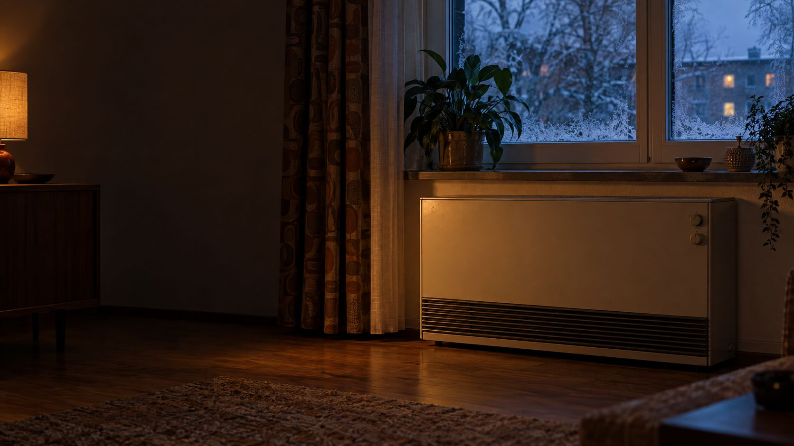
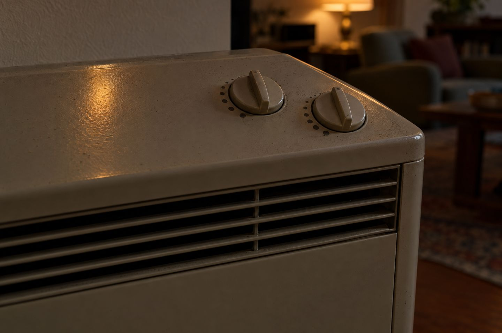

Nachtspeicherheizung: was sie kostet und was hilft
Wie viel Strom ein Nachtspeicher braucht, wie du den Heizstrom-Tarif prüfst, die Aufladung richtig einstellst und wann sich der Tausch lohnt. Mit Rechner.
Eine Nachtspeicherheizung braucht laut ADAC etwa 120 bis 130 kWh Strom je Quadratmeter und Jahr. Bei 100 m² und Heizstrom für 21 bis 27 ct je kWh kostet das 2.520 bis 3.240 € im Jahr, ohne Grundpreis. Sofort sparen lässt sich mit einem günstigeren Heizstrom-Tarif und richtig eingestellter Aufladung; eine Austauschpflicht gibt es nicht.
Nachts laden, tagsüber wärmen.
Ein Nachtspeicher heizt nachts mit günstigerem Strom einen Kern aus Speichersteinen auf. Tagsüber gibt er die Wärme an den Raum ab, teils mit einem kleinen Lüfter.
Bei 100 m² Wohnfläche sind das 12.000 bis 13.000 kWh Strom im Jahr. Warmwasser kommt meist noch dazu.
Nachtstrom ist laut ADAC oft 15 bis 35 Prozent günstiger als Haushaltsstrom. Grundpreis und Zähler kommen dazu.
Ohne Grundpreis und ohne den Teil, der tagsüber zum teureren Preis nachgeladen wird.
Was kostet deine Nachtspeicherheizung?
Wohnfläche mal Verbrauch je m² ergibt den Strom. Der Rechner stellt die Kosten einer Wärmepumpe gegenüber, die dieselbe Wärme liefert. Die Werte bleiben nur in deinem Browser.
So rechnen wir
Strom = Fläche mal Verbrauch je m². Kosten = Strom mal Heizstrom-Preis, ohne Grundpreis und ohne teureren Tagstrom. Für die Wärmepumpe teilen wir die Strommenge durch 3, das untere Ende der 3 bis 5 kWh Wärme je kWh Strom, die der ADAC nennt, und rechnen mit deinem normalen Strompreis. Mit einem eigenen Wärmepumpen-Tarif wird sie meist günstiger. Anschaffung und Förderung sind nicht enthalten. Eine Modellrechnung, keine Beratung.
Erst den Tarif prüfen.
Am Gerät selbst lässt sich wenig ändern, am Preis oft schon. Heizstrom kann man wie Haushaltsstrom wechseln.
- du
Rechnung heraussuchen
Dort stehen Jahresverbrauch, Arbeitspreis für Hoch- und Niedertarif und der Grundpreis. Hast du einen oder zwei Zähler? Das brauchst du für den Vergleich.
- du
Heizstrom-Tarife vergleichen
Gib im Vergleichsportal ausdrücklich „Heizstrom“ oder „Nachtspeicher“ an, mit deiner Postleitzahl und dem Verbrauch. Achte auf den Preis für Hoch- und Niedertarif, nicht nur auf einen Bonus im ersten Jahr.
- du
Bei einem gemeinsamen Zähler genau hinsehen
Misst ein Zähler Heizung und Haushalt zusammen, rechnen manche Netzbetreiber einen Teil als teureren Haushaltsstrom ab. Laut Verbraucherzentrale können solche Ausgleichsmengen 10 bis 25 Prozent ausmachen und 50 bis 100 € im Jahr kosten.
- du
Wechseln
Der neue Anbieter kündigt meist für dich. Mehr zum Ablauf steht unter Stromtarif wechseln.

Richtig einstellen.
Lädt der Speicher nachts zu wenig, heizt er tagsüber mit teurem Strom nach. Lädt er zu viel, verpufft Wärme. Laut ADAC muss der Laderegler zum Thermostat passen.
Aufladung nach dem Wetter
Ohne Automatik stellst du am Vorabend ein, wie kalt der nächste Tag wird: kalt = mehr laden, mild = weniger. Im Herbst und Frühjahr reicht oft eine niedrige Stufe.
Automatik nutzen
Manche Hersteller bieten laut ADAC digitale Aufladesteuerungen mit Außentemperaturfühler und Wettervorhersage. Einbau und Einstellung macht ein Elektrofachbetrieb.
Wärme im Raum halten
Türen zu unbeheizten Räumen schließen, nachts Rollläden und Vorhänge zu. Kurz stoßlüften statt Fenster kippen.
Luft frei lassen
Nichts vor oder auf das Gerät stellen und keine Wäsche darauf trocknen. Die Luftöffnungen müssen frei bleiben, sonst kommt die Wärme nicht in den Raum.
Vorsicht bei alten Öfen.
In älteren Nachtspeichern können Schadstoffe stecken. Solange das Gerät ganz bleibt, wird nichts frei. Gefährlich wird es beim Öffnen und Zerlegen.
Dann kann laut co2online Asbest drin sein. Der ADAC nennt Dämmung, Dichtungen oder Speichersteine. Ob dein Gerät betroffen ist, klärst du über Hersteller, Typ und Baujahr auf dem Typenschild. Verdächtige Geräte nicht öffnen, nicht zerlegen, nicht selbst abbauen.
Fasern können beim Zerlegen frei werden. Nur zugelassene Fachbetriebe dürfen solche Geräte abbauen.
Künstliche Mineralfasern in der Dämmung gelten ebenfalls als Schadstoff.
Abbau und Abholung zahlt der Eigentümer. Bei Schadstoffen kann es teurer werden.
Raus damit oder behalten?
Eine Pflicht zum Austausch gibt es laut ADAC nicht: Bestehende Nachtspeicher dürfen weiterlaufen. Ob sich der Tausch lohnt, hängt vom Gebäude und vom Geld ab.
Laut ADAC liegen die Heizkosten dann bei etwa einem Drittel bis der Hälfte. Braucht aber meist neue Heizkörper und Rohre. Mehr unter Wärmepumpe.
Günstig in der Anschaffung, aber laut ADAC im Dauerbetrieb meist mit hohen Stromkosten. Eher für einzelne Räume, siehe Infrarotheizung.
Ein neues Gerät mit digitaler Steuerung lädt genauer, wird aber nicht gefördert. Neu einbauen darf man ihn nur unter Bedingungen an den Wärmeschutz.
Förderung beim Umstieg
Wer den Nachtspeicher durch eine klimafreundliche Heizung ersetzt, bekommt laut ADAC (Stand 19.11.2026) von der KfW 30 Prozent Grundförderung, dazu einen Bonus für schnelles Handeln, solange die alte Heizung noch funktioniert (derzeit 16 Prozent), und bei geringem Einkommen einen Einkommensbonus. Zusammen höchstens 70 Prozent, gefördert werden bis 28.000 € Kosten für die erste Wohnung. Den Antrag stellst du, bevor du den Auftrag vergibst. Die genauen Sätze prüfst du vorher bei der KfW oder mit einem Energieberater.
Kleine Helfer.
Die Links führen zu einer Suche bei Amazon. Alles, was am Nachtspeicher selbst angeschlossen wird, gehört in die Hand eines Elektrofachbetriebs.Anzeige
Kurz beantwortet.
Wie viel Strom verbraucht eine Nachtspeicherheizung?
Laut ADAC etwa 120 bis 130 kWh je Quadratmeter und Jahr. Eine Wohnung mit 70 m² braucht damit rund 8.400 bis 9.100 kWh, ein Haus mit 100 m² 12.000 bis 13.000 kWh. Warmwasser kommt meist dazu.
Was kostet eine Nachtspeicherheizung im Jahr?
Bei 100 m² und Heizstrom für 21 bis 27 ct je kWh nennt der ADAC 2.520 bis 3.240 € im Jahr, dazu Grundpreis und der teurere Strom, wenn tagsüber nachgeladen wird. Mit dem Rechner oben setzt du deine eigenen Werte ein.
Muss ich meine Nachtspeicherheizung austauschen?
Nein. Laut ADAC gibt es keine allgemeine Austauschpflicht, bestehende Geräte dürfen weiter betrieben werden. Wer umsteigt, kann für eine klimafreundliche Heizung Förderung der KfW bekommen.
Ist in meinem Nachtspeicher Asbest?
Bei Geräten, die vor 1984 gebaut wurden, ist das möglich. Hersteller, Typ und Baujahr stehen auf dem Typenschild. Öffne ein verdächtiges Gerät nicht. Abbau und Entsorgung übernimmt ein zugelassener Fachbetrieb.
Wie stelle ich die Nachtspeicherheizung richtig ein?
Die Aufladung am Vorabend nach dem Wetter wählen: kalt mehr, mild weniger. Lädt der Speicher zu wenig, heizt er tagsüber mit teurem Strom nach. Eine digitale Aufladesteuerung mit Außenfühler nimmt dir das ab, der Einbau gehört in die Hand eines Elektrofachbetriebs.
Was andere Heizungen mit Strom kosten, steht unter Heizlüfter, Infrarotheizung und Wärmepumpe. Wer abends auf dem Sofa friert, findet unter Heizdecke eine günstige Ergänzung.
- ADAC: Nachtspeicherheizung, Kosten, Austausch und Förderung (19.11.2026) adac.de
- Verbraucherzentrale: Nachtspeicherheizung, Wechsel des Stromtarifs kann Geld sparen (21.10.2024) verbraucherzentrale.de
- co2online: Nachtspeicherheizung, Kosten und Verbrauch (13.11.2026) co2online.de
- co2online: Nachtspeicherheizung entsorgen (13.11.2026) co2online.de
Allgemeine Informationen ohne Gewähr, keine Energie- oder Förderberatung. Die Rechnung ist eine Modellrechnung. Geprüft am 27.11.2026.